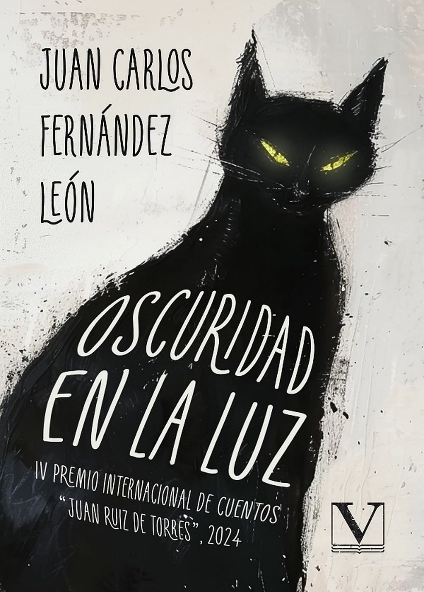

Eñe
Revista Eñe
Relatos publicados en una de las cabeceras de referencia de la narrativa breve en español.
Bibliografía
Narrativa breve publicada entre 2010 y la actualidad. Cada libro, un mapa de pequeñas grietas humanas.

Su libro más reciente. Una colección de relatos que explora la frontera entre la luz y la sombra: lo inquietante que se esconde en lo cotidiano y los destellos que sobreviven en lo más oscuro. Prosa precisa y atmósfera envolvente, reconocida con el IV Premio Internacional de Cuentos «Juan Ruiz de Torres».
Temas: el lado oscuro de lo común, la culpa, la esperanza, lo inesperado.

Volumen de relatos en el que lo doméstico se revela inquietante. Personajes que se protegen tras corazas invisibles y un narrador atento al detalle mínimo que lo cambia todo. Ironía contenida, precisión y un final que no cierra: deja resonando.
Temas: identidad, soledad, lo cotidiano, la memoria.

Su primer libro de relatos, galardonado con el Premio Tiflos. Historias que oscilan entre lo subterráneo y lo elevado, entre lo que escondemos y lo que mostramos. Una colección que anunció ya una de las voces más sólidas del cuento español contemporáneo.
Temas: lo oculto y lo visible, la doble vida, el deseo.
Además
Colaborador habitual de medios literarios como Eñe y El problema de Yorik.
Relatos publicados en una de las cabeceras de referencia de la narrativa breve en español.
Colaboraciones de crítica y creación en este medio literario.
Presencia en volúmenes colectivos del relato español contemporáneo.
«Para nosotros, contar hazañas era aún más importante que vivirlas.» De «De sótanos y azoteas»